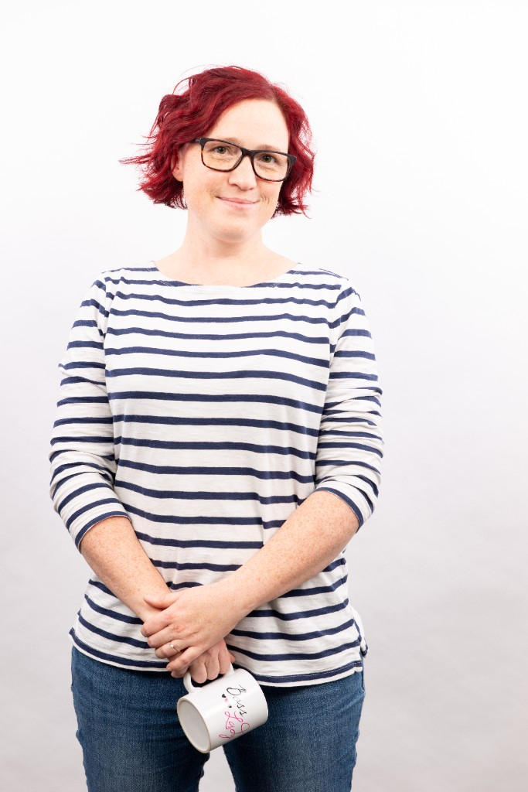

Que la crème de la crème pour vous servir.
Une petite équipe soudée, avec une grande expertise et une vraie passion pour les chiffres qui font sens.

Passionnée par la comptabilité depuis l'âge de 14 ans, Catherine cumule plus de 20 ans d'expérience au service des PME québécoises. Elle fonde GV3 en 2014 avec une mission claire : transformer la comptabilité en levier de croissance grâce à la créativité et à la technologie.
Formée à HEC Montréal en comptabilité professionnelle et gestion des organisations, elle développe des outils sur mesure (Python, Excel, applications web) pour ses clients les plus exigeants. Mentore chez Futurpreneur depuis 2018, elle s'implique activement dans l'écosystème entrepreneurial.
Julie a débuté chez GV3 en 2015 en tant que première employée et a rapidement gagné le titre de « Rockstar ». En 2019, elle est devenue actionnaire à 50% aux côtés de Catherine, sa « workhusband ». Ensemble, elles forment un duo complémentaire et redoutable.
Julie s'occupe de la gestion de ses clients — tenue de livres, support et formation sur les multiples outils de gestion. Elle aime particulièrement trouver des solutions aux problèmes d'organisation des entreprises. Dans une autre vie, elle était restauratrice et co-propriétaire du légendaire Restaurant l'Assommoir Bernard.
Maman de 2 belles grandes filles, GV3 lui permet d'équilibrer ambition professionnelle et vie de famille.
Chez GV3, vous travaillez directement avec les expertes. Pas de relégation à un junior, pas de perte d'information dans la chaîne. Catherine ou Julie — vous parlez toujours à la bonne personne.
Ensemble depuis 2015, associées depuis 2019, elles ont construit une équipe où les forces de l'une complètent parfaitement celles de l'autre.
Rencontrons-nous